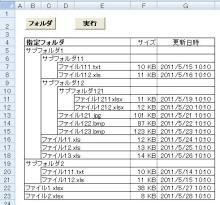

エクセルでファイル一覧を作成.№9（罫線）
エクセルでファイル一覧を作成します、
サブフォルダ以下も全て取得し、一覧表示します、
いよいよ、大詰めです、
今回は罫線を引きましょう。

一見すると、かなり複雑な線を引かないといけないように見えます。
規則性を見つけて下さい。
サブフォルダの縦の空白ばかり見ていると、どうして良いか解らなくなってしまいますよ。
では、シンキングタイム
順番に飲んで待ってます。

見つかりましたか。
「森を見て木を見ず」、「木を見て森を見ず」と言います。
まず、上図をぱっと見て、森を見たはずです。
では、次は、木を見て下さい。
適当な真ん中くらいの１行だけ（前後の行を隠しても良いでしょう）を見て下さい。
これを２～３行比べて下さい。
以下、思考の過程です。
規則性は、
１．どのセルも左には罫線がある
２．文字（フォルダ名、ファイル名）のあるセルは、上にも罫線がある
３．上罫線は、最後まで続いている
４．サイズ、更新日時の左罫線は細線である
では、どんな引き方をすれば良いか。
手作業で線を引くとしたら、
１．文字（フォルダ名、ファイル名）を入れるセルから更新日時までを選択し、
左罫線と上罫線を引く
２．文字を入れるセルより左側のセルを全て選択し、
左罫線と中央縦罫線を引く
３．サイズ、更新日時を全て選択し、
左罫線と中央縦罫線を細線で引く
４．全範囲を選択し、外枠四辺に罫線を引く
これをプログラミングすれば良いのです。
そう、最初は、上の手作業をマクロの記録したものを使用すれば良いでしょう。
Selectionを変更すれば良いです。
そして、不要な部分を削除していけば出来上がります。
以下、作成したプログラムです。
Sub GetDirFiles(ByVal objFolder As Folder, ByRef i As Long, ByRef j As
Long)
Dim objFolderSub As Folder
Dim objFile As
File
'最終列が増えた場合は、サイズの前に1列追加する
If j > ColMax
Then
Columns(j).Insert Shift:=xlToRight
ColMax = j
End
If
'サブフォルダの取得
For Each objFolderSub In
objFolder.SubFolders
Cells(i, j) = objFolderSub.Name
Call
SetLine1(i, j)
i = i + 1
Call GetDirFiles(objFolderSub,
i, j + 1)
Next
'ファイルの取得
For Each objFile In
objFolder.Files
With objFile
Cells(i, j) =
.Name
Cells(i, ColMax + 1) = WorksheetFunction.RoundUp(.Size / 1024,
0)
Cells(i, ColMax + 1).NumberFormatLocal = "#,##0
""KB"""
Cells(i, ColMax + 2) = .DateLastModified
Cells(i,
ColMax + 2).NumberFormatLocal = "yyyy/mm/dd hh:mm:ss"
Call
SetLine1(i, j)
i = i + 1
End
With
Next
'オブジェクトの解放
Set objFolderSub = Nothing
Set objFile
= Nothing
End Sub
'フォルダ名、ファイル名の行の罫線
Sub SetLine1(ByVal i As Long, ByVal j As Long)
If j > cnsCol
Then
With Range(Cells(i, cnsCol), Cells(i, j -
1))
.Borders(xlEdgeLeft).LineStyle =
xlContinuous
.Borders(xlInsideVertical).LineStyle =
xlContinuous
End With
End If
With Range(Cells(i, j), Cells(i,
ColMax + 2))
.Borders(xlEdgeLeft).LineStyle =
xlContinuous
.Borders(xlEdgeTop).LineStyle = xlContinuous
End
With
End Sub
まずは、一覧部分の罫線からです。
引数で行番号、列番号を渡しています。
If j > cnsCol Then
With Range(Cells(i, cnsCol), Cells(i, j -
1))
.Borders(xlEdgeLeft).LineStyle =
xlContinuous
.Borders(xlInsideVertical).LineStyle = xlContinuous
End
With
End If
２．文字を入れるセルより左側のセルを全て選択し、
左罫線と中央縦罫線を引く
に相当します。
cnsColは開始列、j - 1は現在列の左になります。
With Range(Cells(i, j), Cells(i, ColMax + 2))
.Borders(xlEdgeLeft).LineStyle =
xlContinuous
.Borders(xlEdgeTop).LineStyle = xlContinuous
End
With
１．文字（フォルダ名、ファイル名）を入れるセルから更新日時までを選択し、
左罫線と上罫線を引く
に相当します。
jは現在列、ColMax + 2は更新日時の列になります。
マクロの記録では、
.LineStyle = xlNone
が複数記述されますが、これは罫線を引かない指定なので、
もともと罫線が無いのですから不要です。
マクロの記録を使用したら、このような不要な記述を消していきます。
それだけでも、結構すっきりしたプログラムができあがります。
では残りの、見出し部分や、サイズ、更新日時の罫線です。
以下のプログラムでは、サイズ、更新日時の文字を設定したり、
また、外枠の罫線は、メリハリをつけて少し太くしています。
Sub ファイル一覧取得()
Dim objFSO As FileSystemObject
Dim strDir As
String
Dim i As Long, j As Long
strDir = Cells(cnsRow,
cnsCol)
'FileSystemObjectのインスタンスの生成
Set objFSO = New
FileSystemObject
'フォルダの存在確認
If Not objFSO.FolderExists(strDir)
Then
MsgBox ("指定のフォルダは存在しません")
Exit Sub
End
If
'表示領域を初期設定
Range(Rows(cnsRow),
Rows(Cells.SpecialCells(xlCellTypeLastCell).Row)).Clear
Cells(cnsRow,
cnsCol) = strDir
'開始行列
i = cnsRow + 1
j = cnsCol
ColMax =
cnsCol
'再帰処理モジュールのコール
Call GetDirFiles(objFSO.GetFolder(strDir), i,
j)
'オブジェクトの解放
Set objFSO =
Nothing
'列幅を調整
Range(Columns(cnsCol),
Columns(Columns.Count)).ColumnWidth = 3
Range(Columns(ColMax),
Columns(ColMax + 2)).EntireColumn.AutoFit
'サイズ、更新日時の罫線設定
Call
SetLine2(Range(Cells(cnsRow, ColMax + 1), Cells(i - 1, ColMax +
2)))
'見出し行の外枠罫線
Call SetLine3(Range(Cells(cnsRow, cnsCol),
Cells(cnsRow, ColMax + 2)))
'一覧部分の外枠罫線
Call
SetLine3(Range(Cells(cnsRow + 1, cnsCol), Cells(i - 1, ColMax +
2)))
'見出しの書式設定
Cells(cnsRow, ColMax).Font.Bold = True
With
Cells(cnsRow, ColMax + 1)
.Value = "サイズ"
.HorizontalAlignment =
xlRight
End With
With Cells(cnsRow, ColMax + 2)
.Value =
"更新日時"
.HorizontalAlignment = xlRight
End
With
'指定フォルダに移動しておく
Cells(cnsRow, cnsCol).Select
End
Sub
'サイズ、更新日時の罫線設定
Sub SetLine2(ByRef myRange As Range)
With
myRange.Borders(xlEdgeLeft)
.LineStyle = xlContinuous
.Weight =
xlHairline
End With
With
myRange.Borders(xlInsideVertical)
.LineStyle =
xlContinuous
.Weight = xlHairline
End With
End
Sub
'外枠罫線、少し太く
Sub SetLine3(ByRef myRange As Range)
With
myRange.Borders(xlEdgeLeft)
.LineStyle = xlContinuous
.Weight =
xlMedium
End With
With myRange.Borders(xlEdgeTop)
.LineStyle =
xlContinuous
.Weight = xlMedium
End With
With
myRange.Borders(xlEdgeBottom)
.LineStyle = xlContinuous
.Weight =
xlMedium
End With
With myRange.Borders(xlEdgeRight)
.LineStyle
= xlContinuous
.Weight = xlMedium
End With
End
Sub
特段の解説は必要無いでしょう。
罫線の種類、太さ等々は、マクロの記録で確認すれば、直ぐに分かります。
プロパティも単語を見れば理解できるでしょう。
これで罫線も引けて、ほぼ完成です。
罫線の記述はどうしても長くなりますので、このようにSubモジュールにした方が、
「可読性」「保守性」が良くなります。
メインのモジュールは「森」です。
細かいSubモジュールが「木」です。
森も木も両方とも見易くしておく必要があります。
「森」には、どのような「木」が、どのような配置にあるかが分かるようにします。
大きな「木」は、さらに、「枝」の形毎に分類していきます。
まずは、違いを見つけるのではなく、同じ部分を見つけるようすれば良いでしょう。
その後に、違いを見つけて個別に対処します。
今回のように、罫線を引くモジュールは、それだけをSubモジュールにし、
一か所に集めておいた方が良いでしょう。
罫線を変更したい場合は、それぞれが関与するので、まとめて見られるようにしておきます。
さて、いよいよ次回は最終回です。
最後の仕上げです、使えるマクロにする為には、重要な作業になります。
同じテーマ「ファイル一覧を作成」の記事
エクセルでファイル一覧を作成.№1（概要）
エクセルでファイル一覧を作成.№2（Dir関数1）
エクセルでファイル一覧を作成.№3（Dir関数2）
エクセルでファイル一覧を作成.№4（FileLen,FileDateTime）
エクセルでファイル一覧を作成.№5（FileDialog）
エクセルでファイル一覧を作成.№6（FileSystemObject1）
エクセルでファイル一覧を作成.№7（FileSystemObject2）
エクセルでファイル一覧を作成.№8（インデント）
エクセルでファイル一覧を作成.№9（罫線）
エクセルでファイル一覧を作成.№10（完成）
新着記事NEW ・・・新着記事一覧を見る
VBA100本ノック 100本目：WEBから100本ノックのリストを取得｜VBA練習問題（3月3日）
VBA100本ノック 99本目：自動席替え（行列と前後左右が全て違うように）｜VBA練習問題（3月2日）
VBA100本ノック 98本目：席替えルールが守られているか確認｜VBA練習問題（3月1日）
VBA100本ノック 97本目：Accessデータを取得（グループ集計）｜VBA練習問題（2月27日）
VBA100本ノック 96本目：Accessデータを取得（マスタ結合&抽出）｜VBA練習問題（2月26日）
VBA100本ノック 95本目：図形のテキストを検索するフォーム作成｜VBA練習問題（2月24日）
VBA100本ノック 94本目：表範囲からHTMLのtableタグを作成｜VBA練習問題（2月23日）
VBA100本ノック 93本目：複数ブックを連結して再分割｜VBA練習問題（2月22日）
VBA100本ノック 92本目：セルの色を16進で返す関数｜VBA練習問題（2月20日）
VBA100本ノック 91本目：時間計算（残業時間の月間合計）｜VBA練習問題（2月19日）
アクセスランキング ・・・ ランキング一覧を見る
1.最終行の取得（End,Rows.Count）｜VBA入門
2.RangeとCellsの使い方｜VBA入門
3.変数宣言のDimとデータ型｜VBA入門
4.マクロって何？VBAって何？｜VBA入門
5.Range以外の指定方法（Cells,Rows,Columns）｜VBA入門
6.セルのコピー&値の貼り付け（PasteSpecial）｜VBA入門
7.繰り返し処理（For Next)｜VBA入門
8.セルに文字を入れるとは（Range,Value）｜VBA入門
9.マクロはどこに書くの（VBEの起動）｜VBA入門
10.とにかく書いてみよう（Sub,End Sub）｜VBA入門
- ホーム
- マクロVBA応用編
- マクロVBAサンプル集
- ファイル一覧を作成
- エクセルでファイル一覧を作成.№9（罫線）
このサイトがお役に立ちましたら「シェア」「Bookmark」をお願いいたします。
記述には細心の注意をしたつもりですが、
間違いやご指摘がありましたら、「お問い合わせ」からお知らせいただけると幸いです。
掲載のVBAコードは動作を保証するものではなく、あくまでVBA学習のサンプルとして掲載しています。
掲載のVBAコードは自己責任でご使用ください。万一データ破損等の損害が発生しても責任は負いません。